Geological Field Study – Bikrant Kumar Mishra
This geological field study documents geological structures and metamorphic rocks from the Eastern Ghats Mobile Belt (EGMB) in Odisha, India. Observed structures include folds, faults, gneissic banding, dyke intrusions and garnetiferous metamorphic rocks.
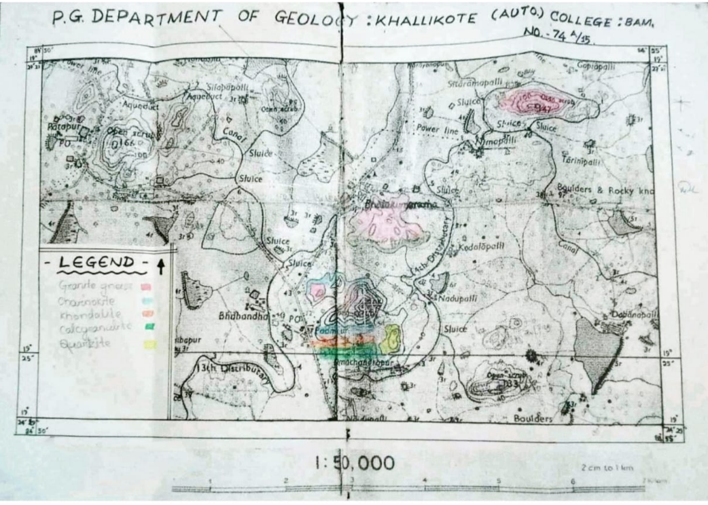
Survey of India Toposheet used for geological field mapping and identifying the Eastern Ghats Mobile Belt study region.
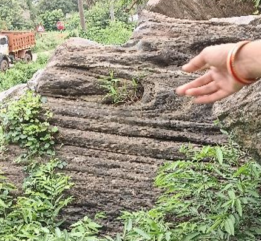
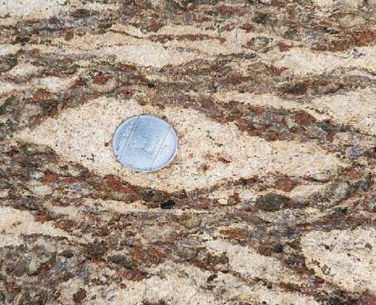
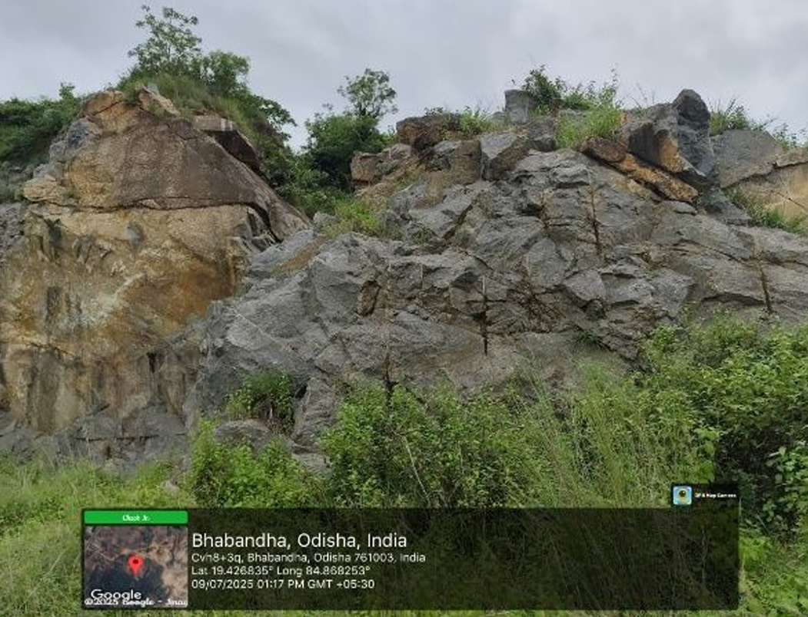
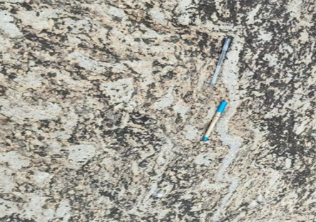
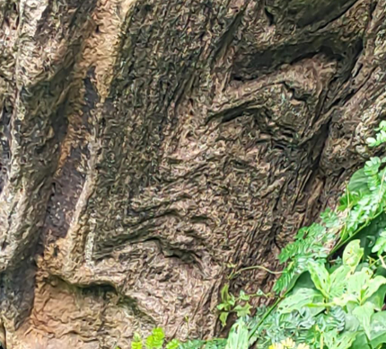
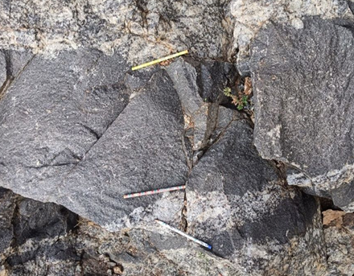
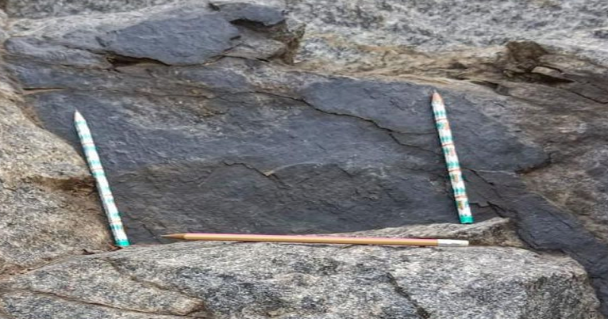
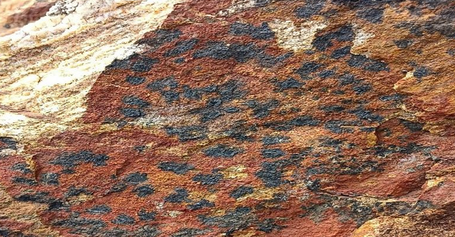
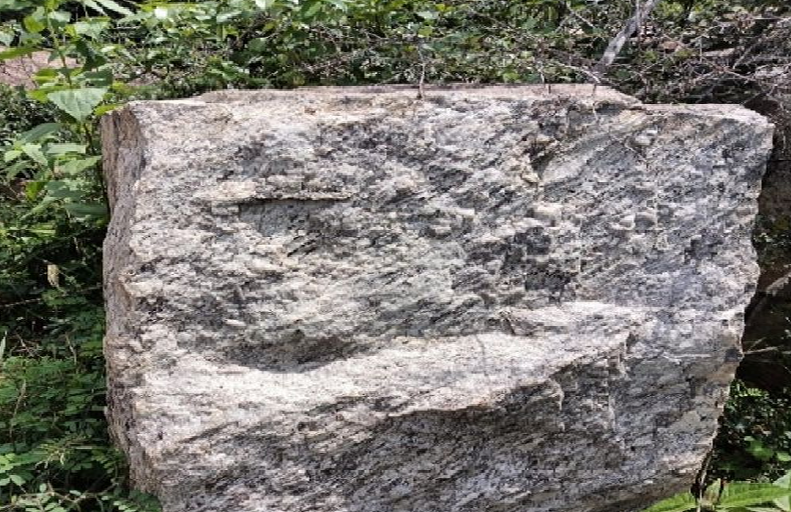
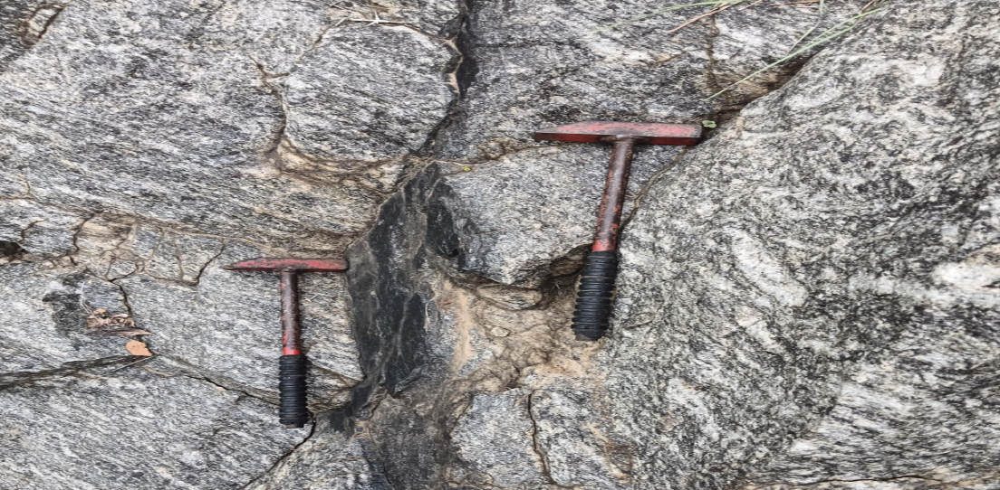
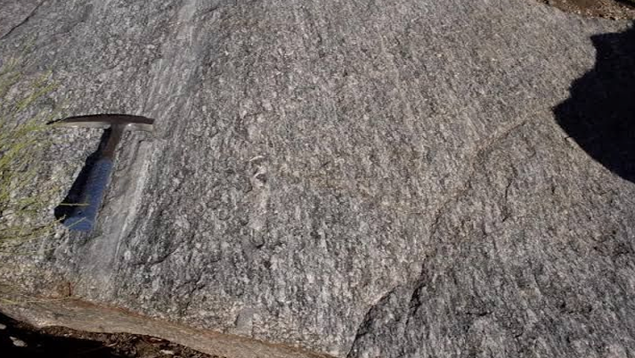
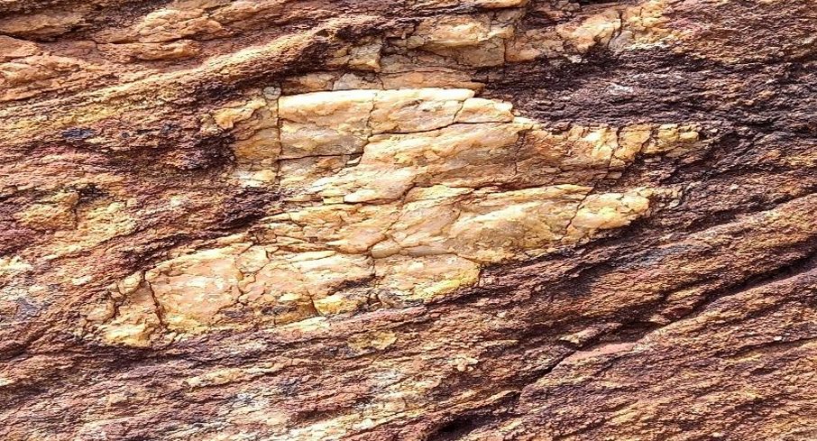
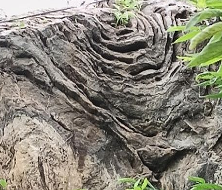
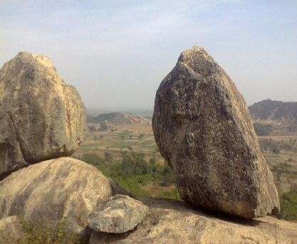